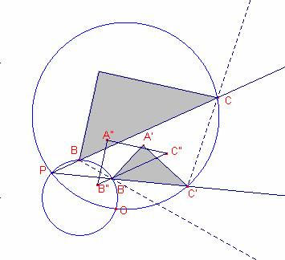

Problema 281
11.20 Les hipotenuses de dos triangles rectangles semblants estan sobre
dues rectes m, m’ que formen un angle de 30º i es tallen en un punt P. Els
vèrtexs B, C del primer disten de P, PB=1, PC=6, i els vèrtexs B’, C’ del
segon, homòlegs de B i C en la semblança, PB’=2, PC’=4,5. Els catets del primer triangle
mesuren b=4 c=3. Sabent que la semblança entre els dos triangles és directa,
Determineu:
a) el centre o punt doble de la semblança directa.
b) dibuixat el primer triangle ABC, Determineu A’, homòleg del vèrtex A de
l’angle recte del primer, utilitzant el gir i la homotècia
del producte de la qual resulta la semblança.
Solució:


La
raó de semblança dels triangles  ,
,  és 2:1
és 2:1
Volem
construir un triangle  igual al triangle
igual al triangle  sobre la recta m
(recta que passa per B, C)
sobre la recta m
(recta que passa per B, C)
Aleshores
els triangles  ,
,  serien homòlegs.
serien homòlegs.
Aleshores
els triangles  ,
,  es transformarien amb
en un gir de 30º i amb el mateix centre que el centre que el centre d’homotècia.
es transformarien amb
en un gir de 30º i amb el mateix centre que el centre que el centre d’homotècia.
Construïm
l’arc capaç de 30º del segment BB’ i l’arc capaç de 30º del segment CC’
La
intersecció dels dos arc en donaria en centre del gir.
Dibuixem
el triangle  de catets
de catets  ,
,  .
.
L’homòleg
A” del vèrtex A és el punt mig del segment  (perquè la raó de
semblança és 2).
(perquè la raó de
semblança és 2).
L’homòleg
B” del vèrtex B és el punt mig del segment
L’homòlèg C” del vèrtex C és el punt mig del segment 
A’
és la rotació de -30º del punt A” amb centre O.
Construcció Amb Cabri:
Figura barroso281.fig
Applet created on 16/11/05 by Ricard Peiró with CabriJava